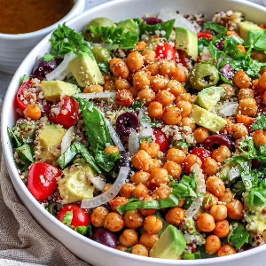

Ingredients
- 1 cup uncooked quinoa
- 1 15 oz. can chickpeas, drained and rinsed
- 1 tsp avocado oil
- 1/2 tsp sweet paprika
- 1/4 tsp garlic powder
- 1/4 tsp kosher salt
- 1/3 cup kalamata olives, coarsely chopped
- 1 pint cherry or grape tomatoes, halved
- 1/2 medium sweet vidalia onion, thinly sliced
- 1 avocado, diced
- 1/4 cup (somewhat packed) fresh basil, thinly sliced
- 1 tbsp (packed) fresh parsley, thinly sliced
- 1 tbsp hemp seed hearts
Dressing:
- 1/4 cup balsamic vinegar
- 1/4 cup olive oil
- 1 tsp kosher salt
- 1 tsp pepper
- 1 tsp agave nectar
- 1 tsp dijon mustard
Instructions
- Cook the quinoa according to package directions then set aside to cool.
- Cook the chickpeas with the
avocado oil, garlic powder and salt for 3 to 4 min over medium heat.
- Meanwhile whisk together the dressing ingredients, and add the remaining ingredients to a mixing
bowl.
- Add quinoa and chickpeas to mixing bowl with half the dressing. Add more dressing as desired.
Source Here